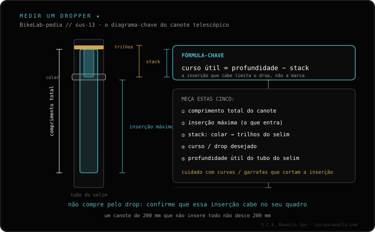

Não depende de uma única coisa, depende de três: 1) o diâmetro do tubo do selim (30.9, 31.6 ou 34.9 mm — você pode subir com bucha, não descer); 2) o curso máximo que cabe, limitado pela inserção disponível e pelo stack do canote, NÃO o curso nominal da caixa; e 3) o roteamento do cabo, interno ou externo. Meça as três antes de comprar: assim você não erra.
O erro mais caro é comprar por curso ("quero um de 150") sem conferir se cabe. Aqui vai a ordem correta.
1 · Diâmetro. Leia a gravação do seu canote atual ou meça o interior do tubo do selim. Os três padrões são 30.9, 31.6 (o mais comum) e 34.9 mm. Você pode montar um canote mais fino com uma bucha redutora, mas nunca um mais grosso que o tubo.
2 · Curso que cabe. Aqui está o detalhe que quase ninguém explica: um dropper precisa entrar um comprimento mínimo dentro do quadro. O curso útil real é limitado pela inserção disponível (quanto desce antes de bater em uma curva, um pivô ou o porta-caramanhola) e pelo stack do canote (o que ele ocupa entre o colar e os trilhos do selim). O número da caixa é o teto, não o que entra.
3 · Roteamento. Se o seu quadro está preparado para cabo interno, use um dropper de acionamento interno; se não, ele vai por fora. Errar isso deixa o canote impossível de montar ou o cabo exposto.

Para fechar a compra sem surpresas você precisa de duas fichas irmãs: o diâmetro 30.9 / 31.6 / 34.9 e, sobretudo, como medir a inserção e o stack. Essa medição é a que de fato decide o curso que cabe em você.
Mande o modelo da sua bike e a sua medida de selim e dizemos qual curso máximo cabe em você. Fale com a gente no WhatsApp
De três coisas: o diâmetro (30.9/31.6/34.9), o curso máximo que cabe (limitado pela inserção e pelo stack) e o roteamento interno ou externo.
Porque o canote precisa entrar um comprimento mínimo no quadro. Se o tubo é curto ou tem curva, ele não entra todo; o curso útil é limitado pela inserção, não pela caixa.
Leia no seu canote atual ou meça o interior do tubo do selim. Você pode subir com bucha (30.9 em 31.6), nunca descer.
© 2026 BikeLab Studio. Conteúdo sob CC BY 4.0: você pode copiar, traduzir e publicar, inclusive com fins comerciais. A citação é obrigatória. Sem atribuição, a licença é revogada automaticamente (CC BY 4.0, §6.a) e o uso passa a ser violação de direitos autorais: solicitamos a retirada do conteúdo e sua desindexação. · Design e propriedade: Carlos Ravello Joo